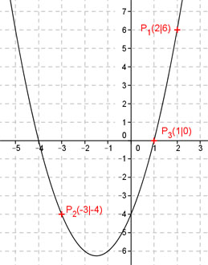

Aufgabe 78 Wie lautet die Funktionsgleichung einer Parabel der Form y = ax2 + bx + c, wenn ihr Graph durch die Punkte P1(2|6), P2(-3|-4) und P3(1|0) geht? P1 ergibt: x = 2 und y = 6 Eingesetzt in y = ax2 + bx + c 6 = a * 22 + b * 2 + c 4a + 2b + c = 6 (1) P2 ergibt: x = -3 und y = -4 Eingesetzt in y = ax2 + bx + c -4 = a * (-3)2 + b * (-3) + c 9a – 3b + c = -4 (2) P3 ergibt: x = 1 und y = 0 Eingesetzt in y = ax2 + bx + c 0 = a * 12 + b * 1 + c a + b + c = 0 (3) Lösung des linearen Gleichungssystems mit (1) , (2) und (3): (1) + (3) * (-2) ergibt 4a + 2b + c = 6 -2a – 2b - 2c = 0 ------------------- 2a – c = 6 (4) (2) + (3) * 3 ergibt 9a – 3b + c = -4 3a + 3b + 3c = 0 -------------------- 12a + 4c = -4 (5) (4) * (4) + (5) ergibt: 8a – 4c = 24 12a + 4c = -4 --------------- 20a = 20 |:20 a = 1 In (4) eingesetzt: 2 – c = 6 |-2 - c = 4 |:(-1) c = -4 In (3) eingesetzt: 1 + b - 4 = 0 b – 3 = 0|+3 b = 3 Gesuchte Funktion: y = x2 + 3x - 4 